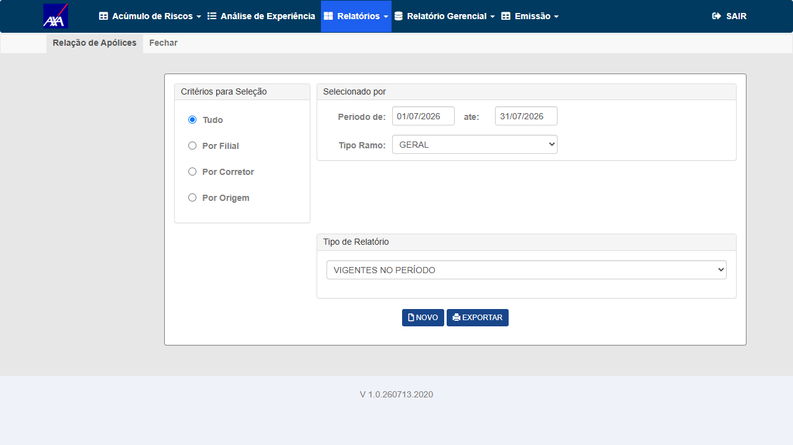
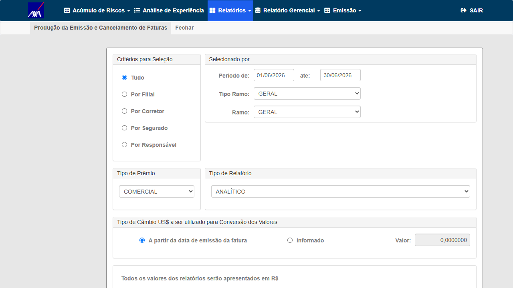
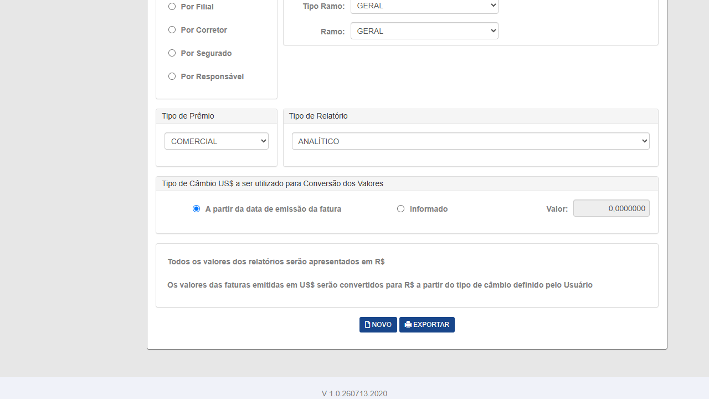
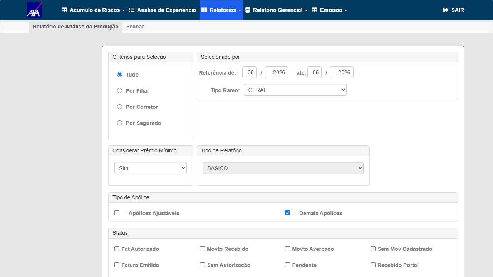
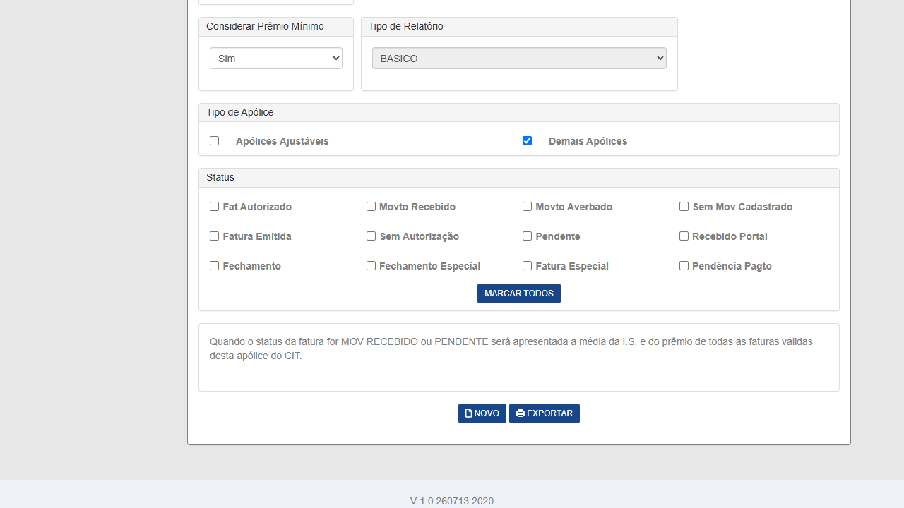
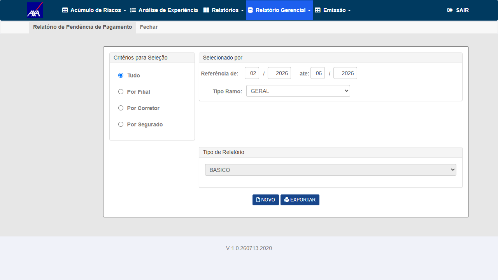
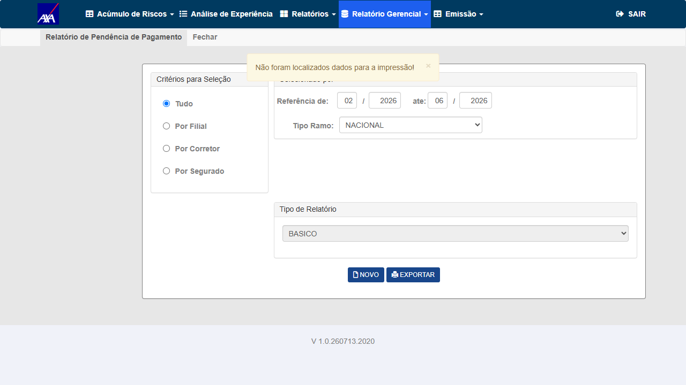
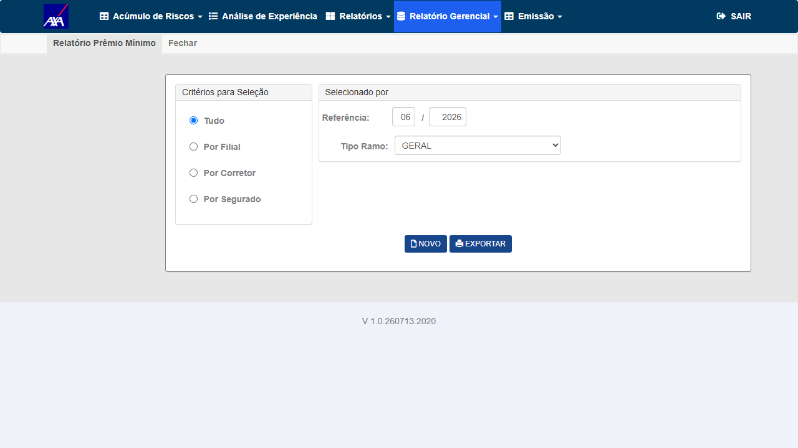
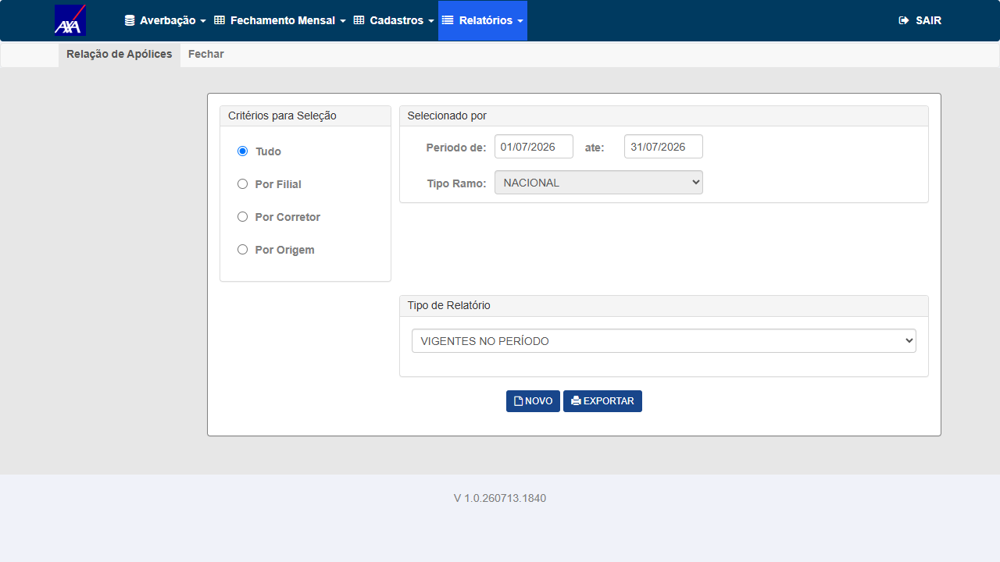
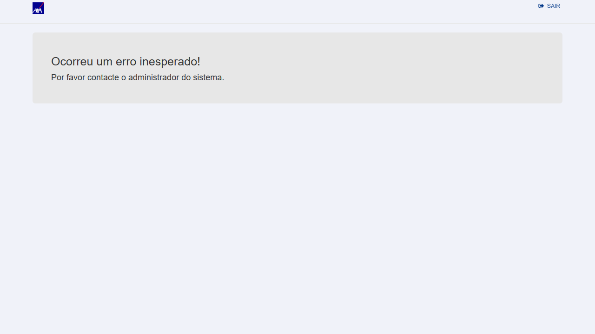

Escopo
GerarRelatorio?parametro=GESTAO retorna HTTP 500 e nenhum arquivo é baixado. Em alguns relatórios exibe "Ocorreu um erro inesperado". Reproduzido em 3 execuções consecutivas (Voidr DEF-CNPJ-GESTAO-RELATORIO-500).
parametro=NACIONAL e parametro=INTERNACIONAL também pode retornar 500 (comentário no código de teste Voidr). O fix deve ser verificado nesses contextos também (CT-GES-006 / CT-GES-007).
| Critério de Aceite (inferido) | CT |
|---|---|
| Relação de Apólices exporta sem HTTP 500 e retorna arquivo (CNPJA-01) | CT-GES-001 |
| Produção exporta sem HTTP 500 (CNPJA-02 — "Ocorreu um erro inesperado" eliminado) | CT-GES-002 |
| Análise da Produção exporta sem HTTP 500 (CNPJA-03) | CT-GES-003 |
| Relatório de Pendência de Pagamento exporta sem HTTP 500 (CNPJA-04) | CT-GES-004 |
| Relatório de Prêmio Mínimo exporta sem HTTP 500 (CNPJA-05) | CT-GES-005 |
| Regressão — export parametro=NACIONAL sem 500 | CT-GES-006 |
| Regressão — export parametro=INTERNACIONAL sem 500 | CT-GES-007 |
Pré-Requisitos
| Item | Detalhe |
|---|---|
| AXA CITWEB Alfa | URL: https://axa-hml-faturamento.nsseg.com.br/alfa/Login: FRED / DERFAmbiente alfanumérico — suporta CNPJ com letras |
| Massa — apólice alfanumérica | Qualquer apólice ativa no ambiente alfa com CNPJ alfanumérico. Verificar na tela Gestão → Relatórios se aparecem apólices no filtro GERAL antes de exportar. |
| Fix deployado | Bug ainda In Progress (dev task "Analise e Desenvolvimento" To Do). Executar somente após deploy do fix em HML alfa. |
Positivo · Sanidade · CNPJA-01
- Ambiente: AXA CITWEB Alfa —
https://axa-hml-faturamento.nsseg.com.br/alfa/ - Fix do bug #7754 deployado em HML alfa
- Pelo menos uma apólice ativa no filtro GERAL
- Login em
https://axa-hml-faturamento.nsseg.com.br/alfa/comFRED/DERF - No menu, abrir o módulo Gestão (popup)
- Navegar até Relatórios → Relação de Apólices
- Definir filtro Tipo Ramo = GERAL
- Clicar em Exportar (confirmar "Sim" se solicitado)
- Aguardar a resposta do servidor
- Verificar via DevTools (Network) que o POST para
GerarRelatorio?parametro=GESTAOretornou 2xx - Confirmar que o arquivo foi baixado com sucesso
POST GerarRelatorio?parametro=GESTAO retorna 2xx. Arquivo XLSX/XLS/CSV é baixado para o computador. Nenhuma mensagem de erro exibida na tela.
Antes do fix: POST retornava HTTP 500 e nenhum arquivo era baixado — confirmado em 3 execuções Voidr (EXEC-001731 → 001732 → 001733).
Gestao/RelatorioApolices/GerarRelatorio?parametro=GESTAO retornou 2xx; download de Apolices_Cadastradas.xlsx (1,41 MB, XLSX válido, 3.000+ linhas). O arquivo contém 431 CNPJs alfanuméricos distintos (ex.: H3KXH3LAEGBM48) — objetivo central da entrega CNPJ ALFA validado. Sem HTTP 500. · AXA CITWEB Alfa · Gestão V 1.0.260713.2020 · 15/07/2026

Positivo · Sanidade · CNPJA-02
- Mesmo ambiente e login de CT-GES-001
- Fix deployado
- Login AXA CITWEB Alfa (FRED/DERF)
- Módulo Gestão → Relatórios → Produção
- Filtro Tipo Ramo = GERAL → clicar Exportar
- Aguardar resposta do servidor
- Verificar que NÃO aparece "Ocorreu um erro inesperado"
- Verificar via DevTools que o POST retornou 2xx
- Confirmar arquivo baixado
POST retorna 2xx. Arquivo baixado com sucesso. Mensagem "Ocorreu um erro inesperado" NÃO aparece na tela.
Analitico_Producao_Periodo_Ger_FRED.xlsx. A mensagem "Ocorreu um erro inesperado" NÃO ocorreu (confirmado via browser_evaluate: temErro=false). Sem HTTP 500. · AXA CITWEB Alfa · Gestão V 1.0.260713.2020 · 15/07/2026

Positivo · Sanidade · CNPJA-03
- Login AXA CITWEB Alfa (FRED/DERF)
- Módulo Gestão → Relatórios → Análise da Produção
- Filtro Tipo Ramo = GERAL → clicar Exportar
- Verificar via DevTools que POST retornou 2xx
- Confirmar arquivo baixado
POST retorna 2xx. Arquivo baixado sem erro.
Gestao/RelatorioAnaliseProducao/GerarRelatorio retornou 2xx; download de Analitico_Producao_Basico.xlsx (68 linhas). Sem HTTP 500. · AXA CITWEB Alfa · Gestão V 1.0.260713.2020 · 15/07/2026

Positivo · Sanidade · CNPJA-04
- Login AXA CITWEB Alfa (FRED/DERF)
- Módulo Gestão → Relatório Gerencial → Relatório de Pendência de Pagamento
- Definir filtros → clicar Exportar
- Verificar via DevTools que POST retornou 2xx
- Confirmar arquivo baixado
POST retorna 2xx. Arquivo baixado sem erro.


Positivo · Sanidade · CNPJA-05
- Login AXA CITWEB Alfa (FRED/DERF)
- Módulo Gestão → Relatório Gerencial
- No combo de tipo de relatório, selecionar Prêmio Mínimo
- Definir filtros → clicar Exportar
- Verificar via DevTools que POST retornou 2xx
- Confirmar arquivo baixado
POST retorna 2xx. Arquivo baixado sem erro.
Relatorio_Premio_Minimo_15072026_093942.xlsx (161 linhas). Sem HTTP 500. · AXA CITWEB Alfa · Gestão V 1.0.260713.2020 · 15/07/2026

Regressão · Indício de falha estendida ao contexto Nacional
Código de teste Voidr indica que o endpoint GerarRelatorio também falha com parametro=NACIONAL. Este CT verifica se o fix da Gestão resolveu também o contexto Nacional ou se há falha residual.
- Login AXA CITWEB Alfa (FRED/DERF)
- Acessar módulo Nacional (Averbações / Relatórios Nacional)
- Navegar até qualquer relatório exportável no contexto Nacional
- Clicar em Exportar
- Verificar via DevTools que POST para
GerarRelatorio?parametro=NACIONALretornou 2xx - Confirmar arquivo baixado
POST GerarRelatorio?parametro=NACIONAL retorna 2xx. Arquivo baixado. Sem regressão no contexto Nacional.
Nacional/RelatorioApolices/GerarRelatorio?parametro=NACIONAL retornou HTTP 500. A tela exibe "Ocorreu um erro inesperado! Por favor contacte o administrador do sistema." Esperado: 2xx + arquivo. O fix (PR #1335) corrigiu o contexto Gestão, mas NÃO o módulo Nacional — o endpoint continua com o mesmo erro do bug original. · AXA CITWEB Alfa · Gestão V 1.0.260713.2020 · 15/07/2026

Regressão · Indício de falha estendida ao contexto Internacional
- Login AXA CITWEB Alfa (FRED/DERF)
- Acessar módulo Internacional (Averbações / Relatórios Internacional)
- Navegar até qualquer relatório exportável no contexto Internacional
- Clicar em Exportar
- Verificar via DevTools que POST para
GerarRelatorio?parametro=INTERNACIONALretornou 2xx - Confirmar arquivo baixado
POST GerarRelatorio?parametro=INTERNACIONAL retorna 2xx. Arquivo baixado. Sem regressão no contexto Internacional.
Internacional/RelatorioApolices/GerarRelatorio?parametro=INTERNACIONAL retornou HTTP 500 ("Ocorreu um erro inesperado!"). Esperado: 2xx + arquivo. Obs.: o módulo Internacional está no build V 1.0.260708.1827 (08/07), anterior ao build do fix (13/07) — o fix pode não ter sido deployado neste módulo. · AXA CITWEB Alfa · Gestão V 1.0.260713.2020 · 15/07/2026
Matriz de Rastreabilidade
| Critério de Aceite | CT | Status |
|---|---|---|
| Relação de Apólices exporta sem HTTP 500 (CNPJA-01) | CT-GES-001 | APROVADO |
| Produção exporta sem HTTP 500 e sem "Ocorreu um erro inesperado" (CNPJA-02) | CT-GES-002 | APROVADO |
| Análise da Produção exporta sem HTTP 500 (CNPJA-03) | CT-GES-003 | APROVADO |
| Relatório de Pendência de Pagamento exporta sem HTTP 500 (CNPJA-04) | CT-GES-004 | APROVADO |
| Relatório de Prêmio Mínimo exporta sem HTTP 500 (CNPJA-05) | CT-GES-005 | APROVADO |
| Regressão — GerarRelatorio parametro=NACIONAL sem 500 | CT-GES-006 | REPROVADO |
| Regressão — GerarRelatorio parametro=INTERNACIONAL sem 500 | CT-GES-007 | REPROVADO |
Riscos
| Risco | Prob. | Impacto | Mitigação |
|---|---|---|---|
| AXA HML alfa retorna 522 (infra instável) | Alta | Bloqueia todos os CTs | Verificar conectividade antes da execução; notificar no Teams se bloqueado |
| Relatório retorna 2xx mas arquivo está vazio ou corrompido | Baixa | Bug residual | Verificar tamanho e conteúdo do arquivo baixado — não apenas o status HTTP |
| CNPJ alfanumérico não aparece no arquivo exportado | Média | Objetivo central da entrega não validado | Verificar se o arquivo exportado contém CNPJs alfanuméricos (ex: D77L6VWV000116) |